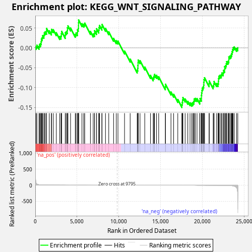
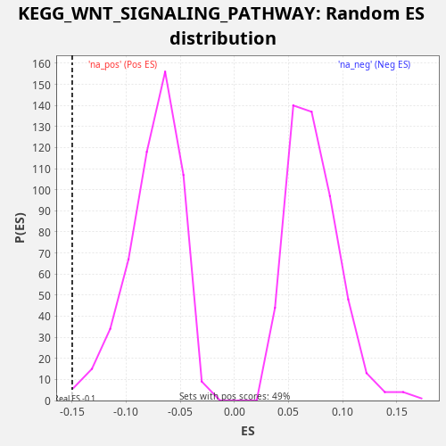

| Dataset | LabCL |
| Phenotype | NoPhenotypeAvailable |
| Upregulated in class | na_neg |
| GeneSet | KEGG_WNT_SIGNALING_PATHWAY |
| Enrichment Score (ES) | -0.14988582 |
| Normalized Enrichment Score (NES) | -2.0077906 |
| Nominal p-value | 0.00390625 |
| FDR q-value | 0.04808924 |
| FWER p-Value | 0.358 |

| SYMBOL | RANK IN GENE LIST | RANK METRIC SCORE | RUNNING ES | CORE ENRICHMENT | |
|---|---|---|---|---|---|
| 1 | RUVBL1 | 94 | 69.618 | 0.0036 | No |
| 2 | SFRP4 | 196 | 31.875 | 0.0068 | No |
| 3 | FZD4 | 448 | 13.633 | 0.0039 | No |
| 4 | FZD1 | 508 | 11.850 | 0.0089 | No |
| 5 | CTBP1 | 637 | 8.525 | 0.0111 | No |
| 6 | AXIN1 | 705 | 7.538 | 0.0157 | No |
| 7 | PLCB2 | 729 | 7.116 | 0.0223 | No |
| 8 | DKK1 | 826 | 5.984 | 0.0257 | No |
| 9 | PPP2R1A | 885 | 5.465 | 0.0308 | No |
| 10 | DVL2 | 1037 | 4.213 | 0.0320 | No |
| 11 | WNT6 | 1081 | 3.903 | 0.0377 | No |
| 12 | PPP2CB | 1194 | 3.311 | 0.0405 | No |
| 13 | NFATC3 | 1347 | 2.604 | 0.0416 | No |
| 14 | PRKACB | 1349 | 2.587 | 0.0491 | No |
| 15 | CREBBP | 1675 | 1.727 | 0.0430 | No |
| 16 | FZD2 | 1927 | 1.306 | 0.0401 | No |
| 17 | PPP2R5B | 1947 | 1.287 | 0.0468 | No |
| 18 | CCND3 | 2153 | 1.058 | 0.0457 | No |
| 19 | PLCB4 | 2517 | 0.752 | 0.0381 | No |
| 20 | CACYBP | 2924 | 0.535 | 0.0288 | No |
| 21 | NFAT5 | 3080 | 0.468 | 0.0298 | No |
| 22 | CSNK2B | 3126 | 0.449 | 0.0354 | No |
| 23 | PSEN1 | 3156 | 0.437 | 0.0417 | No |
| 24 | RHOA | 3586 | 0.316 | 0.0313 | No |
| 25 | CAMK2B | 3596 | 0.313 | 0.0384 | No |
| 26 | SFRP1 | 3723 | 0.285 | 0.0406 | No |
| 27 | FRAT2 | 3835 | 0.262 | 0.0435 | No |
| 28 | WNT5A | 3847 | 0.260 | 0.0505 | No |
| 29 | DVL3 | 3911 | 0.249 | 0.0554 | No |
| 30 | MAP3K7 | 4220 | 0.197 | 0.0501 | No |
| 31 | SMAD4 | 4786 | 0.132 | 0.0341 | No |
| 32 | PLCB3 | 4883 | 0.124 | 0.0376 | No |
| 33 | GSK3B | 5045 | 0.110 | 0.0383 | No |
| 34 | WNT4 | 5054 | 0.109 | 0.0455 | No |
| 35 | SENP2 | 5144 | 0.102 | 0.0492 | No |
| 36 | PRKX | 5174 | 0.100 | 0.0555 | No |
| 37 | PPARD | 5177 | 0.100 | 0.0629 | No |
| 38 | CSNK2A2 | 5185 | 0.100 | 0.0701 | No |
| 39 | RAC1 | 5587 | 0.074 | 0.0609 | No |
| 40 | CCND1 | 5800 | 0.064 | 0.0596 | No |
| 41 | WNT3 | 5917 | 0.058 | 0.0622 | No |
| 42 | FZD7 | 6599 | 0.033 | 0.0414 | No |
| 43 | NLK | 6934 | 0.024 | 0.0350 | No |
| 44 | PPP2R5D | 7091 | 0.021 | 0.0360 | No |
| 45 | FZD8 | 7099 | 0.021 | 0.0432 | No |
| 46 | PRKACA | 7328 | 0.016 | 0.0412 | No |
| 47 | CXXC4 | 7340 | 0.016 | 0.0482 | No |
| 48 | SIAH1 | 7598 | 0.012 | 0.0450 | No |
| 49 | FZD6 | 7628 | 0.012 | 0.0513 | No |
| 50 | AXIN2 | 7687 | 0.011 | 0.0563 | No |
| 51 | CHP1 | 7969 | 0.008 | 0.0521 | No |
| 52 | TBL1XR1 | 7989 | 0.008 | 0.0588 | No |
| 53 | SMAD2 | 8403 | 0.004 | 0.0492 | No |
| 54 | DAAM1 | 8793 | 0.002 | 0.0405 | No |
| 55 | PPP3R1 | 9371 | 0.000 | 0.0240 | No |
| 56 | NFATC2 | 9696 | 0.000 | 0.0180 | No |
| 57 | DKK2 | 9896 | 0.000 | 0.0172 | No |
| 58 | APC | 10683 | -0.000 | -0.0079 | No |
| 59 | PPP2CA | 11355 | -0.002 | -0.0283 | No |
| 60 | CHD8 | 12196 | -0.008 | -0.0556 | No |
| 61 | FRAT1 | 12265 | -0.009 | -0.0510 | No |
| 62 | PPP2R5A | 12281 | -0.009 | -0.0442 | No |
| 63 | ROCK1 | 12300 | -0.009 | -0.0374 | No |
| 64 | SKP1 | 12312 | -0.009 | -0.0304 | No |
| 65 | FZD9 | 12535 | -0.012 | -0.0322 | No |
| 66 | RAC2 | 13102 | -0.018 | -0.0482 | No |
| 67 | PORCN | 13789 | -0.030 | -0.0692 | No |
| 68 | FOSL1 | 14114 | -0.038 | -0.0752 | No |
| 69 | PRKCG | 14196 | -0.040 | -0.0711 | No |
| 70 | FZD5 | 14274 | -0.042 | -0.0668 | No |
| 71 | MAPK9 | 14510 | -0.048 | -0.0691 | No |
| 72 | CTBP2 | 14769 | -0.056 | -0.0723 | No |
| 73 | SMAD3 | 15564 | -0.086 | -0.0978 | No |
| 74 | MMP7 | 15588 | -0.087 | -0.0913 | No |
| 75 | SFRP5 | 16239 | -0.117 | -0.1108 | No |
| 76 | CTNNB1 | 16560 | -0.137 | -0.1166 | No |
| 77 | PRKCA | 17056 | -0.173 | -0.1296 | No |
| 78 | WNT9A | 17545 | -0.216 | -0.1424 | Yes |
| 79 | RBX1 | 17586 | -0.220 | -0.1366 | Yes |
| 80 | LEF1 | 17631 | -0.226 | -0.1310 | Yes |
| 81 | FBXW11 | 17665 | -0.229 | -0.1249 | Yes |
| 82 | WNT10A | 17933 | -0.258 | -0.1285 | Yes |
| 83 | WNT5B | 18254 | -0.299 | -0.1343 | Yes |
| 84 | PLCB1 | 18523 | -0.334 | -0.1380 | Yes |
| 85 | PRKCB | 18731 | -0.367 | -0.1391 | Yes |
| 86 | APC2 | 18870 | -0.394 | -0.1373 | Yes |
| 87 | CUL1 | 18976 | -0.413 | -0.1342 | Yes |
| 88 | PPP3CC | 19017 | -0.422 | -0.1284 | Yes |
| 89 | PPP3CA | 19156 | -0.451 | -0.1267 | Yes |
| 90 | MYC | 19358 | -0.496 | -0.1276 | Yes |
| 91 | WNT10B | 19684 | -0.575 | -0.1336 | Yes |
| 92 | NKD2 | 19712 | -0.582 | -0.1272 | Yes |
| 93 | JUN | 19880 | -0.626 | -0.1267 | Yes |
| 94 | BTRC | 19881 | -0.626 | -0.1192 | Yes |
| 95 | WNT11 | 19907 | -0.634 | -0.1128 | Yes |
| 96 | LRP6 | 19949 | -0.647 | -0.1071 | Yes |
| 97 | PRICKLE1 | 19983 | -0.658 | -0.1010 | Yes |
| 98 | PPP2R5C | 20090 | -0.692 | -0.0979 | Yes |
| 99 | FZD10 | 20158 | -0.719 | -0.0932 | Yes |
| 100 | ROCK2 | 20174 | -0.726 | -0.0864 | Yes |
| 101 | NFATC4 | 20193 | -0.730 | -0.0797 | Yes |
| 102 | PPP2R5E | 20260 | -0.757 | -0.0749 | Yes |
| 103 | EP300 | 20807 | -1.028 | -0.0901 | Yes |
| 104 | VANGL2 | 20821 | -1.037 | -0.0832 | Yes |
| 105 | CHP2 | 21294 | -1.330 | -0.0953 | Yes |
| 106 | WNT2B | 21360 | -1.388 | -0.0905 | Yes |
| 107 | VANGL1 | 21397 | -1.427 | -0.0846 | Yes |
| 108 | DVL1 | 21700 | -1.751 | -0.0896 | Yes |
| 109 | PRICKLE2 | 21877 | -1.992 | -0.0895 | Yes |
| 110 | NKD1 | 21921 | -2.068 | -0.0838 | Yes |
| 111 | CSNK1A1 | 21933 | -2.084 | -0.0768 | Yes |
| 112 | CAMK2G | 21973 | -2.163 | -0.0709 | Yes |
| 113 | WNT7B | 22103 | -2.387 | -0.0688 | Yes |
| 114 | CAMK2A | 22261 | -2.727 | -0.0679 | Yes |
| 115 | NFATC1 | 22325 | -2.893 | -0.0630 | Yes |
| 116 | TBL1X | 22494 | -3.453 | -0.0625 | Yes |
| 117 | MAPK8 | 22531 | -3.612 | -0.0566 | Yes |
| 118 | CAMK2D | 22661 | -4.079 | -0.0545 | Yes |
| 119 | PPP2R1B | 22662 | -4.090 | -0.0470 | Yes |
| 120 | TCF7L1 | 22784 | -4.782 | -0.0445 | Yes |
| 121 | CSNK2A1 | 22854 | -5.223 | -0.0399 | Yes |
| 122 | PPP3CB | 22902 | -5.538 | -0.0344 | Yes |
| 123 | RAC3 | 23066 | -6.798 | -0.0337 | Yes |
| 124 | WNT7A | 23160 | -7.744 | -0.0301 | Yes |
| 125 | TP53 | 23161 | -7.771 | -0.0227 | Yes |
| 126 | MAPK10 | 23287 | -9.536 | -0.0204 | Yes |
| 127 | TCF7 | 23415 | -11.811 | -0.0182 | Yes |
| 128 | CSNK1E | 23504 | -13.637 | -0.0144 | Yes |
| 129 | CTNNBIP1 | 23556 | -14.980 | -0.0090 | Yes |
| 130 | LRP5 | 23621 | -17.446 | -0.0042 | Yes |
| 131 | WNT16 | 23684 | -20.493 | 0.0007 | Yes |
| 132 | FZD3 | 23820 | -27.876 | 0.0025 | Yes |
| 133 | TCF7L2 | 24096 | -75.930 | -0.0014 | Yes |
| 134 | CCND2 | 24237 | -356.583 | 0.0002 | Yes |

{kind=link}
{kind=link}